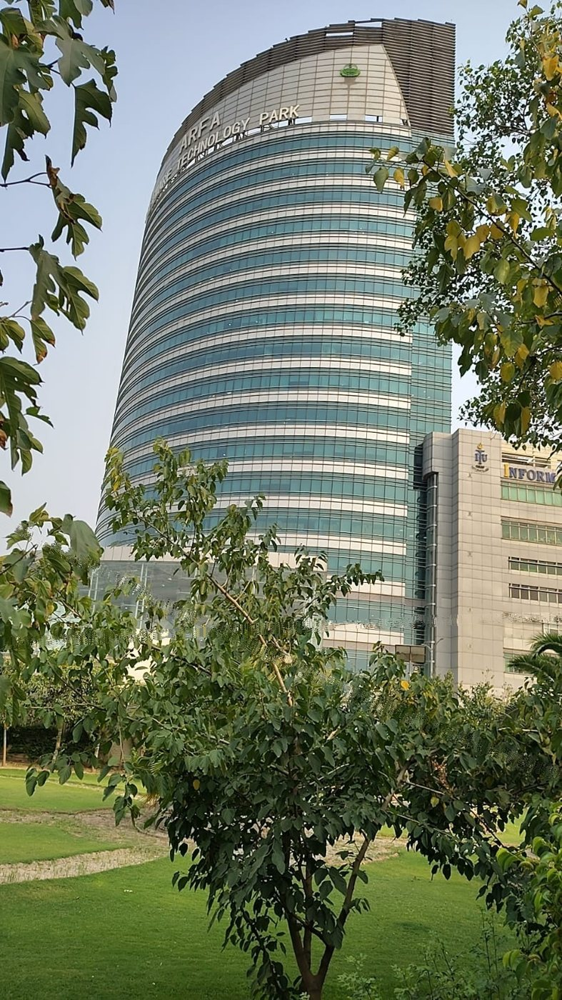
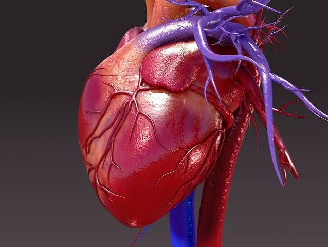

I take machine learning out of the notebook and into products: satellite analysis that planners can read, medical models a surgeon can hold, interfaces that don’t need a data scientist to explain them.
Selected works of Mehreen Asghar, 2026.
I’m Mehreen, a software engineering student at The Superior University, Lahore, and an AI intern on the AIRI team at PITB. I like problems where a model has to leave the notebook and meet a real person: a planner looking at satellite change, a surgeon rehearsing before an operation.
Right now I split my time between three things: GeoAI for land monitoring, a medical AR prototype that turns heart scans into 3D models, and a short film where I’m learning how sound and image carry a story.
I care about the whole chain of an idea: the data, the model, the API, and the interface that makes it usable.
I want to join teams that carry a model all the way to an interface people use every day, not just to a metric.
Medical imaging and AR can let trainees and surgeons practise on a patient’s own anatomy. HeartLens is my first step there.
Filmmaking is the other half of how I think: pacing, sound and small details. It makes me a more careful designer of interfaces.
Sentinel-2 imagery, NDVI and NDBI, change detection over time.
Turning CT and MRI scans into 3D models people can handle.
Classification, detection, and how a CNN actually sees an image.
Scenes built from light, birdsong and the sound of water.
FastAPI backends and dashboards for people who aren’t data scientists.
Applied GeoAI work with the AIRI team at Arfa Software Technology Park.
OngoingAn AI-to-AR heart rehearsal prototype, built in Unity for Android.
PrototypeThe first clip of my short film, with a GUI prototype to plan it.
In developmentCoursework continues at The Superior University, Lahore.
Ongoing
A full-stack GeoAI platform that compares Sentinel-2 imagery across two years to detect urban expansion and farmland loss. It computes NDVI/NDBI, classifies land cover, runs change detection and shows it all on a live dashboard: 254 km² analyzed with 80% validated accuracy.

A rehearsal platform for heart surgery. An AI model segments heart CT/MRI scans into a 3D model, and surgeons or trainees practise on it with hand gestures in AR. I chose AR over VR to keep the cost down, and I’m building the prototype in Unity for Android.
The first clip of my short film: a quiet dawn scene, scored with birdsong and dripping water. A GUI prototype is helping me plan it.
A convolutional network trained on MNIST: preprocessing, architecture, training, evaluation and accuracy tuning.
Edge detection, blurring and sharpening built by hand to show how a CNN processes an image, kernel by kernel.
An applied look at attention and sequence modeling, implemented to understand the blocks behind modern language models.
A detector that finds vehicles and traffic elements in images and video, later extended into a small monitoring app.
Education, internship, skills and shipped projects, laid out for a recruiter, an ATS or a printout.
Download CV (PDF)Open to AI/LLM systems, computer vision, GeoAI and full-stack AI products. Write to me and I’ll reply.